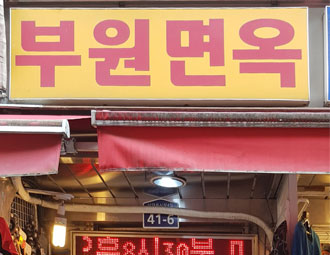

풍남
음식점업
국수사리로 사용되는 국수는 직접 제면소에서 뽑아오고 있으며, 골뱅이는 직접 맛을...
서울 중구 수표로 50-1
2021년3기선정
뚱뚱이할머니집
음식점업
"3대 째 이어지고 있는 족발 전문점으로 전통 과 새로운 트렌드의 조화를 ...
서울 중구 장춘단로 174-1 1~2층(장충동1가)
2021년 1기 선정
평양면옥
음식점업
3대째 이어져온 평양냉면 전문점으로, 엄선된 국내산 메밀을 매일 직접 제분하여...
서울특별시 중구 장충단로 207 평양면옥
2020년 2기 선정
신한양식당
음식점업
서울역 광장 왼쪽 한편에 위치한 식당으로 대 표자와 딸,손자 3대가 함께 운영 중이다...
서울특별시 중구 청파로 426 신한양식당
2020년 2기 선정

부평식당(부원면옥)
음식점업
남대문시자아 내 평양냉면 전문점으로'냉면',
'빈대떡','닭무침'이 주 메뉴로 겨울에...
서울특별시 중구 남대문시장4길 41-6 2층 부원식당
2020년 2기 선정
태극당
음식점업
서울에서 가장 오래된 빵집으로 단순히 빵집
을 넘어 시대·지역·문화·고객이 조화를...
서울특별시 중구 동호로24길 7 태극당
2020년 1기 선정
뚱보돼지갈비
음식점업
뚱보식당은 대표님이 1940년부터 현재까지
운영중이신 곳으로 을지로에서 유명한...
서울특별시 중구 퇴계로27길 14
2019 년 5기 선정
부산복집
음식점업
충무로 먹자골목의 명물'부산 복집'은 복어
요리가 흔하지 않던 70년대부터 복 요리를...
서울특별시 중구 수표로2길 25
2018년 2기 선정
을지OB비어
음식점업
1980년 12월 문을 연 '을지OB비어'
생맥주는 냉각기를 쓰지 않고...
서울특별시 중구 충무로9길 12
2018년 1기 선정
대전광역시 중구 보문로 246 대림빌딩 2~3층, 11층 소상공인시장진흥공단 (우 : 34917)
COPYRIGHT © 2018Long-Lasting Small Business ALL RIGHTS RESERVED